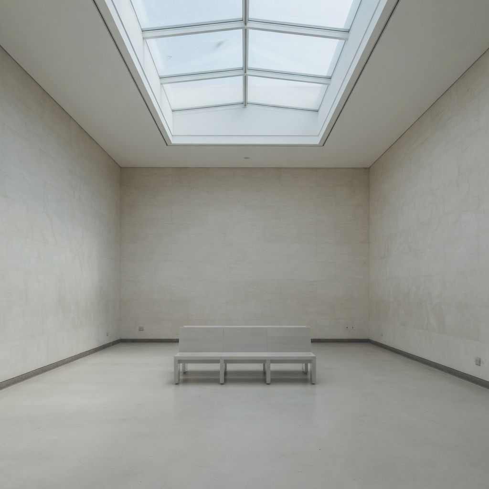

vblack_level · high
black level
The floor of the tone scale: how close the darkest values sit to true black.
true black floor → lifted or milky blacks
What it changes
Raising black level lifts the floor without necessarily opening mid-shadows the same way.
- blacks lift or sit dense
- shadow floor fog or ink
Aliases
lifted blacks, crushed blacks, black crush
Controlled examples
low
medium
high
Nearby
Commonly confused with
- vec_key_to_fill_ratio: Ratio changes the lights. Black level lifts or sets the floor on the same lighting.
- vec_shadow_density: Shadow density is how heavy the shadow masses feel, not only the black floor.
- vec_veiling_glare: Glare is a lens haze. Black lift is a tone-floor change without a required veil.
Studies
Open questions
- Is the still-life high too weak to keep this as a working axis?